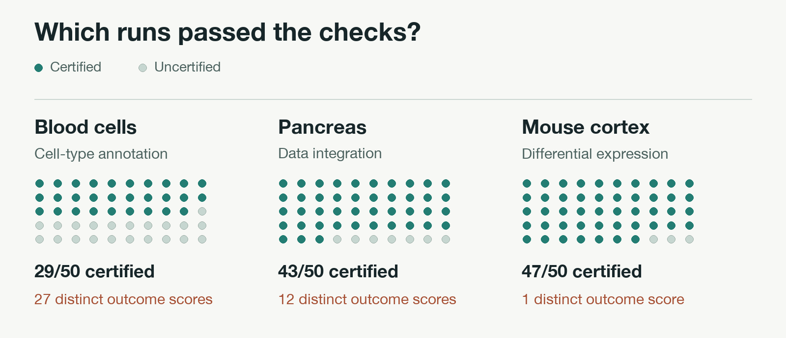

SCAPE: Single-Cell Analysis Proficiency Exam

Motivation
Two scientists can analyze the same single-cell dataset in different ways and reach defensible conclusions. An AI agent faces the same choices about which cells to keep, how to compare samples, and how to name cell types. We wanted to know whether an evaluation could tell when those choices changed the biological result.
Prior work
Open Problems in Single-Cell Analysis established common datasets and quantitative tasks. scBench took this further for agents by checking whether each analysis reaches a specified endpoint. Our framework, the Single-Cell Analysis Proficiency Exam (SCAPE), pairs checks on individual analysis steps with a score for the scientific task. It also tracks whether a run produced the outputs needed for a fair comparison.
What we found
We audited ten models across three tasks, with five runs per model on each task. Of 150 scheduled runs, 119 finished and passed the checks. Among those runs, the blood-cell task yielded 27 distinct outcome scores, while the mouse cortex task yielded just one. The cortex score gave us no way to distinguish those runs.